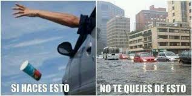
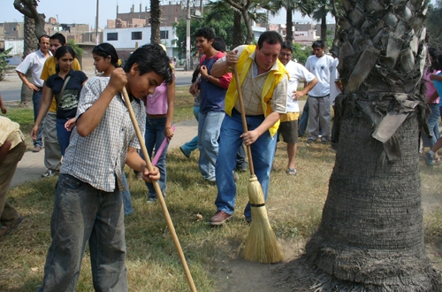
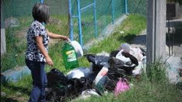

Debemos estar más informados de lo que sucede en nuestro entorno ambiental, sobre todo en casos como el de éstas empresas, tal vez no podríamos exigirles a ellos, pero sí al gobierno, ya que hay muchas normas dentro de nuestra constitución y leyes que exigen el cuidado a nuestra flora y nuestras tierras. De alguna forma, todos como pueblo tenemos la obligación y el derecho de exigir, al igual que nosotros también debemos cuidar el lugar donde habitamos, que nos da de comer y un espacio para poder vivir. Sí no fuera de una forma como ésta, entonces podría ser que hiciéramos un paro para dejar de consumis productos de éstas empresas y así ellos se darían cuenta que los ciudadanos estamos molestos con ellos y así habría un poco menos de daños. No sólo ellos contaminan recordemos que nosotros somos los que consumimos estos productos, así que gran parte de culpa de nuestra, de tal forma que contribuímos en el aspecto que les damos razones para seguir procesando sus productos; aunque no sólo ayudamos en esa forma, sí no que nosotros nos ponemos a tirar basura en la calle, sin pensar que no somos uno ni dos, gran parte del país lo hacen, son pocos los que se ponen a reflexionar y colocan la basura en su lugar. Así que yo creo que lo correcto sería, ayudar y nosotros poner el ejemplo a estas personas, haciendo las cosas como deben de ser, como plantando árboles, cultivando nuestros propios vegetales en nuestros patios, salir a barrer por lo menos nuestra banqueta, no tirar la basura en la calle, reciclar, ahorrar energía, etc.    ATRÁS